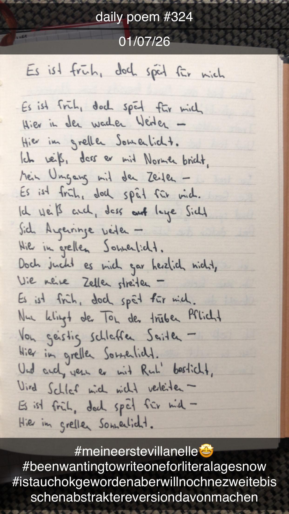

Es ist früh, doch spät für mich
Es ist früh, doch spät für mich,
Hier in den wachen Weiten –
Hier im grellen Sonnenlicht.
Ich weiß, dass er mit Normen bricht,
Mein Umgang mit den Zeiten –
Es ist früh, doch spät für mich.
Ich weiß auch, dass auf lange Sicht
Sich Augenringe weiten –
Hier im grellen Sonnenlicht.
Doch juckt es mich gar herzlich nicht,
Wie meine Zellen streiten –
Es ist früh, doch spät für mich.
Nun klingt der Ton der trüben Pflicht
Auf geistig schlaffen Saiten –
Hier im grellen Sonnenlicht.
Und auch, wenn er mit Ruh' besticht,
Wird Schlaf mich nicht verleiten –
Es ist früh, doch spät für mich –
Hier im grellen Sonnenlicht.
